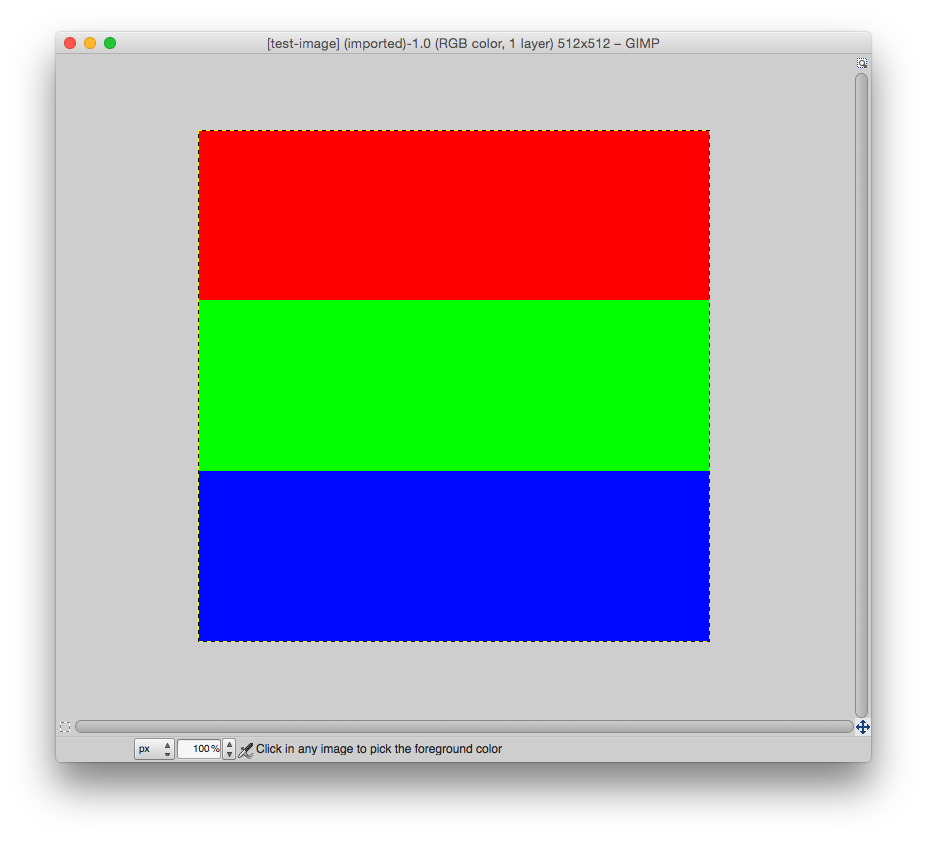

---

layout: default
title: 02-testppm

---

{% highlight c++ %}
// Tyler Mumford, 2014
// Testing out the PPM image format.

#include <stdio.h>

int main () {
	const int WIDTH = 512, HEIGHT = 512;
	const unsigned char RED[] = {1,0,0}, GREEN[] = {0,1,0}, BLUE[] = {0,0,1};

	int i, j;
	FILE *testppm;

	testppm = fopen("test-image.ppm", "w");

	fprintf(testppm, "P6\n%i %i\n1\n", WIDTH, HEIGHT);
	for (i=0; i<WIDTH; i++) {
		for (j=0;j<HEIGHT; j++) {
			if (i<HEIGHT/3) fwrite(RED, 1, 3, testppm);
			else if (i<HEIGHT*2/3) fwrite(GREEN, 1, 3, testppm);
			else fwrite(BLUE, 1, 3, testppm);
		}
	}

	fclose(testppm);

	return 0;
}
{% endhighlight %}


